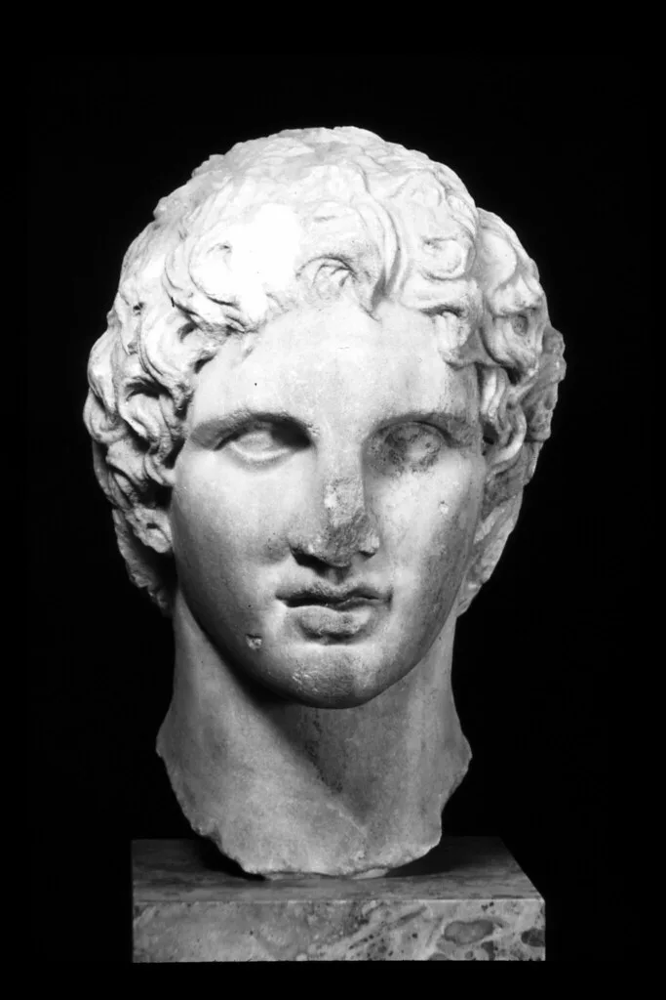
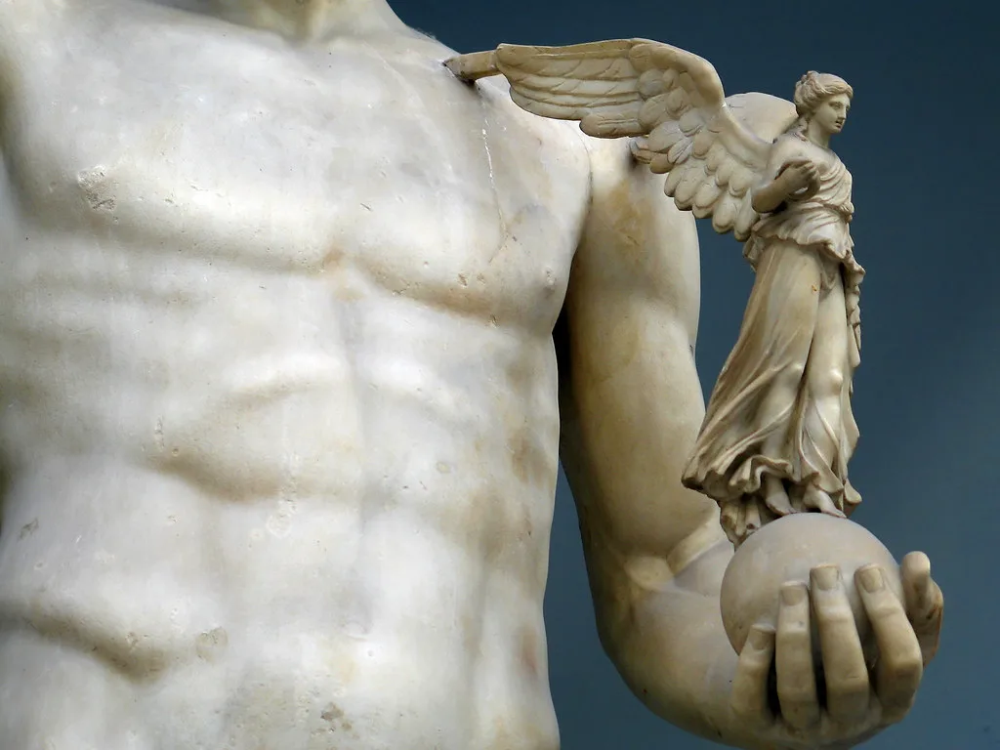
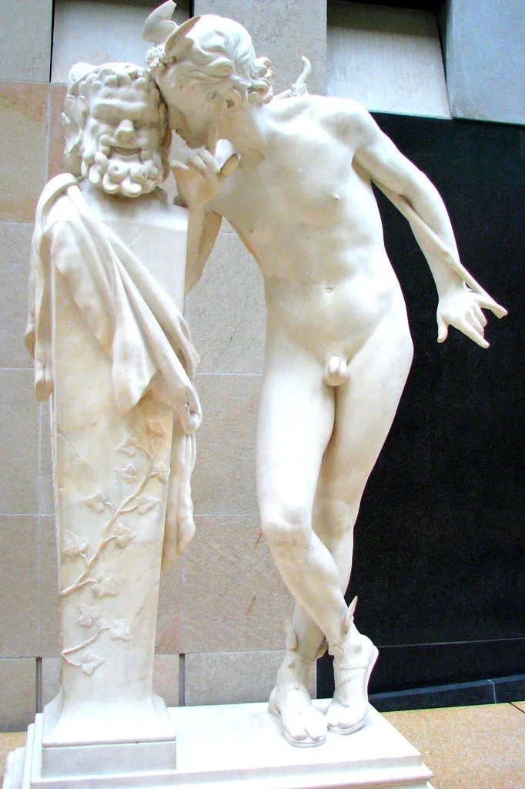

01
OSUKĀ

( 01 ) · Punto de vista
Un tatuaje bien hecho se parece a una escultura: nace de la luz, del volumen y de la paciencia. Cada pieza se dibuja sobre tu anatomía, se estudia antes de empezar y se trabaja hasta que la piel deja de parecer piel y empieza a parecer piedra.
( 02 ) · Obra
Mármol, bronce
y sombra.

02
Victoria
Hombro · Pecho
03
El Fauno
Pierna04
Mirada
Antebrazo05
La Ofrenda
Brazo* Imágenes de referencia. Se sustituyen por las fotos reales de cada pieza.
( 03 ) · Healed
Lo que importa es
cómo queda curado.
Un tatuaje recién hecho siempre luce bien. La diferencia está a los meses, cuando la piel ha cerrado y los grises se asientan. Por eso trabajo pensando en la pieza cicatrizada, no en la foto del día.
- Contraste calculado para que no se apague
- Degradados limpios, sin saturar la piel
- Revisión de la pieza curada
Recién hecho
Curado
( 04 ) · Metodología
Cuatro pasos,
ninguno con prisa.
-
I
Conversación
Me cuentas la idea, la zona y qué significa para ti. Vemos referencias, tamaño y si el diseño encaja con tu cuerpo.
-
II
Diseño
Dibujo la pieza a medida sobre tu anatomía. Se revisa antes de la sesión, sin sorpresas el día del tatuaje.
-
III
Sesión
Trabajo con calma, en un entorno limpio y con pausas. Material de un solo uso y protocolo sanitario completo.
-
IV
Cicatrización
Te explico cómo cuidarla y la revisamos curada. Si hay que retocar algo, se retoca.
( 05 ) · Estudio
Dos ciudades,
una agenda.
Base
Málaga
Estancias
Madrid
* Fechas de ejemplo. Se actualizan desde lib/manifest.js.
( 06 ) · Pedir cita
Cuéntame
tu pieza.
Cuanta más información, mejor puedo valorar si encaja con mi estilo y darte una respuesta útil. Respondo personalmente.